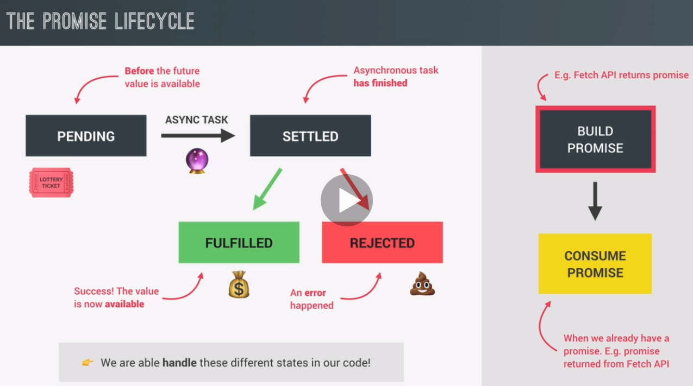

This is a very basic fetch function call to a URL.
This returns a promise.
const request = fetch('https://restcountries.com/v2/name/portugal')
console.log(request)
A Promise is an object that is used basically as a placeholder for the future result of an asynchronous operation.
Advantage is that you no longer need to rely on events and callback functions to handle asynchronous results.
Also, you can chain them instead of nesting (which escapes callback hell).
since promises work with asynchronous operations, they are time sensitive. So they change over time. This is called the lifecycle.
this is before any value resulting from the asynchronous task is available. Now, during this time, the asynchronous task is still doing its work in the background.
when the task finally finishes, we say that the promise is settled and there are two different types of settled promises and that's fulfilled promises and rejected promises.
Another important thing about promises is that a promise is only settled once. And so from there, the state will remain unchanged forever. So the promise was either fulfilled or rejected, but it's impossible to change that state.
Fulfilled: a fulfilled promise is a promise that has successfully resulted in a value just as we expect it and it's now available to being used.
Rejected: a rejected promise means that there has been an error during the asynchronous task.
these different states are relevant and useful when we use a promise to get a result, which is called, to consume a promise.
So we consume a promise when we already have a promise.
But in order for a promise to exist in the first place, it must first be built. So it must be created in the case of the fetch API, it's the fetch function that builds the promise and returns it for us to consume.
This is a very basic fetch function call to a URL.
This returns a promise.
.then() is used to handle this first Promise. It returns the response Object. But, the .body property cannot be read.
To read the .body property, you must use json(). But, this creates a 2nd Promise.
Use then() again on this 2nd Promise. This time, the data is returned.
const getCountryData = function (country) {
// This creates a Promise
fetch(`https://restcountries.com/v2/name/${country}`)
// Use the then() Promise method to handle the Promise
// Pass in a callback function to be executed as soon as the promise is fulfilled
// This function receives 1 arg once it's called by JavaScript
// That argument is the resulting value of the fulfilled promise. Here's it's called response
.then(function (response) {
// This returns an Object named Response
console.log(response);
// The Response Object contains a body property
// You must use the json() method on the response Object to view this data
// json() also returns a new Promise, so you must return it here and handle it
return response.json();
}) // this then() is a callback function to handle the json() promise data
// this time you get access to the data because the resolved value of this promise is the data itself
.then(function (data) {
console.log(data);
renderCountry(data[0]);
});
};
getCountryData('portugal');
This is the same as above but uses Arrow Functions.
This fetches something and then we get a response which will be transformed to json. And then we take that data and render the country to the DOM.
const getCountryData = function (country) {
fetch(`https://restcountries.com/v2/name/${country}`)
// Arrow function to return response.json
.then(response => response.json())
.then(data => renderCountry(data[0]));
};
getCountryData('portugal');